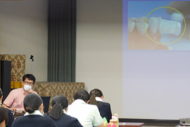
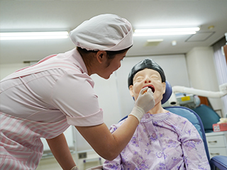
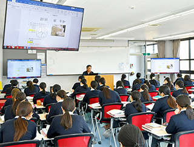
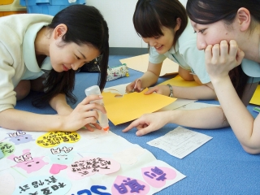
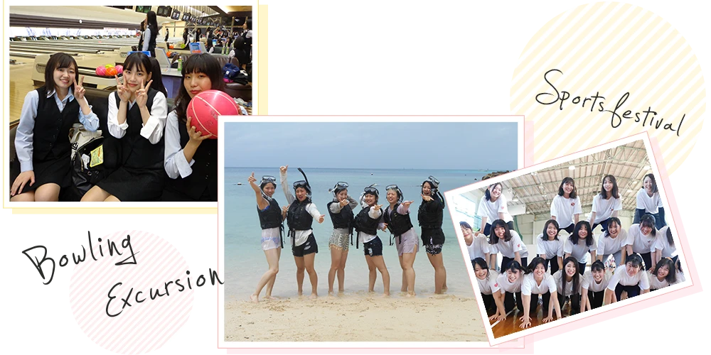

卒業までの流れ
CURRICULUM
専門知識・技術と社会性を培う最良の実践的カリキュラム
実践力を身に付ける実習を多く取り入れ、高度な歯科技術と知識を習得します。
また、豊かな社会性を養う授業など、多様なカリキュラムを組んでいます。
1年
歯科医療に関する基礎から、専門的な知識と技術を習得
一般教養、専門分野の基礎学習、基礎実習が中心の授業を行います。歯科専門知識に必要な基礎科目のほか、歯科英会話など充実した内容の講義です。
2年

実習を中心に行い、専門知識を深めていく
実習生同士で模擬患者となり、予防的歯石除去の実習や器械を用いての歯磨きなど、校内での実習、歯科医院での臨床実習を中心に進められていきます。また、介護職員初任者研修、沖縄への修学旅行もあります。
3年

技術的質を高め国家試験合格を目指す
一般歯科医院の他に、久留米大学病院、福岡歯科大学、聖マリア病院などの協力を得て、より専門性の高い歯科治療現場での校外実習を行っていきます。また、国家試験に向けての特別講義・模擬試験、卒業試験も行われます。
進路

全国どこでも一つの資格でキャリアを続けられます
全国どこでも一つの資格でキャリアを続けられるのは、歯科衛生士という仕事の魅力です。
配偶者の転勤のため、同じ地域で働き続けるのが難しい人にとっては、場所を選ばず仕事ができる歯科衛生士は適職です。
また、歯科衛生士の仕事には、自分の生活や家庭の都合に応じて仕事を調整しやすいという良さがあります。 一人で生活している時は常勤で働き、家庭ができたら一旦仕事を離れ、子育てが落ち着いたら非常勤で短時間勤務というように、ライフスタイルに応じて仕事を調整することができます。
勉強もプライベートも安心
SYSTEM

国家試験対策確実合格するための
多彩なプログラムでサポート
- 約30科目の国家試験対策の補講
- 模擬試験
- 小テスト
- 面談形式の口頭試問
- 直前勉強会
- 個別指導
- その他各種勉強会
進路指導
面談を中心に一人ひとりに適した
きめ細やかな進路指導
- 就職オリエンテーションを行い、就職活動をサポート
- 自分に合った就職先を決定するためのポイントを指導
- 最後の最後まで面倒見る丁寧な指導
学生ファーストの教育相談体制
勉強や学校のことだけでなく、日常生活での心配事や悩みなどが気軽に相談できるスクールカウンセラーを配置(毎月2回)